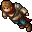
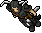

Warriors
Essa task você vai ter que matar 700 Warriors que pode ser "Hero" ou "Blacknight".
Hero
O "Hero" tem ❤1400 de vida e tem defesa 🧊10 🌾-10 🔥90 💀20 ⚡90 💡40" e XP de 5400.
Blacknight
O "Blacknight" tem ❤1800 de vida e tem defesa 🧊15 🌾15 🔥99 💀15 ⚡99 💡15" e XP de 7200.
O XP dessa quest vária entre 3.780.000 a 5.040.000 mais 200.000 da quest, Lembrando que não estou contando com bonus de level só o vip mesmo.
O loot Varia bastante, mas na 'minha opinião' matar os Hero vale mais a pena, ele dropa o crow set e um item de montaria, o Blacknight dropa um item de montaia e "boots of haste" de bom mas o XP é maior.
Home